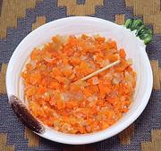

|
Salsa AmericanaChile - Salsa Americana | ||||
| Makes: Effort: Sched: DoAhead: |
1 cup ** 30 min Must |
No-one seems to have any idea why this pickled salsa is named "American", but that has not hindered its popularity, particularly in sandwiches. | |||
|
------- 6 6 4 ------- 1-1/2 1 1 |
--- oz oz oz --- c T c |
-- Vegies Carrots Cucumbers (1) Onion ------------- Water Salt Vinegar, white |
Make - (30 min - 5 days pickling)
|